Sensitivity to ISO#
using ModelingToolkit
using OrdinaryDiffEq, SteadyStateDiffEq, DiffEqCallbacks
using Plots
using LsqFit
using CaMKIIModel
using CaMKIIModel: μM, hil, Hz, hilr, second
Plots.default(lw=1.5)
Setup b1AR system#
@parameters ATP = 5000μM ISO = 0μM
sys = get_bar_sys(ATP, ISO; simplify=true)
\[\begin{split} \begin{align}
\frac{\mathrm{d} \mathtt{LR}\left( t \right)}{\mathrm{d}t} &= - \mathtt{kf\_bARK} \mathtt{LR}\left( t \right) - \mathtt{kr\_LR} \mathtt{LR}\left( t \right) + \mathtt{kr\_LRG} \mathtt{LRG}\left( t \right) + \mathtt{kr\_bARK} \mathtt{b1AR\_S464}\left( t \right) + \mathtt{ISO} \mathtt{kf\_LR} \mathtt{b1AR}\left( t \right) - \mathtt{kf\_LRG} \mathtt{LR}\left( t \right) \mathtt{Gs}\left( t \right) - \mathtt{kf\_PKA} \mathtt{PKACI}\left( t \right) \mathtt{LR}\left( t \right) \\
\frac{\mathrm{d} \mathtt{LRG}\left( t \right)}{\mathrm{d}t} &= - \mathtt{k\_G\_act} \mathtt{LRG}\left( t \right) - \mathtt{kf\_bARK} \mathtt{LRG}\left( t \right) - \mathtt{kr\_LRG} \mathtt{LRG}\left( t \right) + \mathtt{kf\_LRG} \mathtt{LR}\left( t \right) \mathtt{Gs}\left( t \right) - \mathtt{kf\_PKA} \mathtt{PKACI}\left( t \right) \mathtt{LRG}\left( t \right) \\
\frac{\mathrm{d} \mathtt{RG}\left( t \right)}{\mathrm{d}t} &= - \mathtt{k\_G\_act} \mathtt{RG}\left( t \right) - \mathtt{kr\_RG} \mathtt{RG}\left( t \right) + \mathtt{kf\_RG} \mathtt{Gs}\left( t \right) \mathtt{b1AR}\left( t \right) \\
\frac{\mathrm{d} \mathtt{GsaGTP}\left( t \right)}{\mathrm{d}t} &= \mathtt{k\_G\_act} \mathtt{RG}\left( t \right) + \mathtt{k\_G\_act} \mathtt{LRG}\left( t \right) - \mathtt{k\_G\_hyd} \mathtt{GsaGTP}\left( t \right) + \mathtt{kr\_AC\_Gsa} \mathtt{AC\_GsaGTP}\left( t \right) - \mathtt{kf\_AC\_Gsa} \mathtt{AC}\left( t \right) \mathtt{GsaGTP}\left( t \right) \\
\frac{\mathrm{d} \mathtt{GsaGDP}\left( t \right)}{\mathrm{d}t} &= \mathtt{k\_G\_hyd} \mathtt{AC\_GsaGTP}\left( t \right) + \mathtt{k\_G\_hyd} \mathtt{GsaGTP}\left( t \right) - \mathtt{k\_G\_reassoc} \mathtt{Gsby}\left( t \right) \mathtt{GsaGDP}\left( t \right) \\
\frac{\mathrm{d} \mathtt{b1AR\_S464}\left( t \right)}{\mathrm{d}t} &= \mathtt{kf\_bARK} \mathtt{LR}\left( t \right) + \mathtt{kf\_bARK} \mathtt{LRG}\left( t \right) - \mathtt{kr\_bARK} \mathtt{b1AR\_S464}\left( t \right) \\
\frac{\mathrm{d} \mathtt{b1AR\_S301}\left( t \right)}{\mathrm{d}t} &= - \mathtt{kr\_PKA} \mathtt{b1AR\_S301}\left( t \right) + \mathtt{kf\_PKA} \mathtt{PKACI}\left( t \right) \mathtt{LR}\left( t \right) + \mathtt{kf\_PKA} \mathtt{PKACI}\left( t \right) \mathtt{LRG}\left( t \right) + \mathtt{kf\_PKA} \mathtt{PKACI}\left( t \right) \mathtt{b1AR}\left( t \right) \\
\frac{\mathrm{d} \mathtt{AC\_GsaGTP}\left( t \right)}{\mathrm{d}t} &= - \mathtt{k\_G\_hyd} \mathtt{AC\_GsaGTP}\left( t \right) - \mathtt{kr\_AC\_Gsa} \mathtt{AC\_GsaGTP}\left( t \right) + \mathtt{kf\_AC\_Gsa} \mathtt{AC}\left( t \right) \mathtt{GsaGTP}\left( t \right) \\
\frac{\mathrm{d} \mathtt{PDEp}\left( t \right)}{\mathrm{d}t} &= - \mathtt{k\_PP\_PDE} \mathtt{PDEp}\left( t \right) + \mathtt{k\_PKA\_PDE} \mathtt{PDE}\left( t \right) \mathtt{PKACII}\left( t \right) \\
\frac{\mathrm{d} \mathtt{cAMP}\left( t \right)}{\mathrm{d}t} &= \frac{\mathtt{ATP} \mathtt{k\_AC\_basal} \mathtt{AC}\left( t \right)}{\mathtt{ATP} + \mathtt{Km\_AC\_basal}} + \frac{\mathtt{ATP} \mathtt{k\_AC\_Gsa} \mathtt{AC\_GsaGTP}\left( t \right)}{\mathtt{ATP} + \mathtt{Km\_AC\_Gsa}} + \frac{\left( - \mathtt{k\_cAMP\_PDE} \mathtt{PDE}\left( t \right) - \mathtt{k\_cAMP\_PDEp} \mathtt{PDEp}\left( t \right) \right) \mathtt{cAMP}\left( t \right)}{\mathtt{Km\_PDE\_cAMP} + \mathtt{cAMP}\left( t \right)} + \mathtt{kr\_RC\_cAMP} \mathtt{RCcAMP\_I}\left( t \right) + \mathtt{kr\_RC\_cAMP} \mathtt{RCcAMP\_II}\left( t \right) + \mathtt{kr\_RCcAMP\_cAMP} \mathtt{RCcAMPcAMP\_II}\left( t \right) + \mathtt{kr\_RCcAMP\_cAMP} \mathtt{RCcAMPcAMP\_I}\left( t \right) - \mathtt{kf\_RC\_cAMP} \mathtt{RC\_II}\left( t \right) \mathtt{cAMP}\left( t \right) - \mathtt{kf\_RC\_cAMP} \mathtt{RC\_I}\left( t \right) \mathtt{cAMP}\left( t \right) - \mathtt{kf\_RCcAMP\_cAMP} \mathtt{RCcAMP\_I}\left( t \right) \mathtt{cAMP}\left( t \right) - \mathtt{kf\_RCcAMP\_cAMP} \mathtt{RCcAMP\_II}\left( t \right) \mathtt{cAMP}\left( t \right) \\
\frac{\mathrm{d} \mathtt{RCcAMP\_I}\left( t \right)}{\mathrm{d}t} &= - \mathtt{kr\_RC\_cAMP} \mathtt{RCcAMP\_I}\left( t \right) + \mathtt{kr\_RCcAMP\_cAMP} \mathtt{RCcAMPcAMP\_I}\left( t \right) + \mathtt{kf\_RC\_cAMP} \mathtt{RC\_I}\left( t \right) \mathtt{cAMP}\left( t \right) - \mathtt{kf\_RCcAMP\_cAMP} \mathtt{RCcAMP\_I}\left( t \right) \mathtt{cAMP}\left( t \right) \\
\frac{\mathrm{d} \mathtt{RCcAMP\_II}\left( t \right)}{\mathrm{d}t} &= - \mathtt{kr\_RC\_cAMP} \mathtt{RCcAMP\_II}\left( t \right) + \mathtt{kr\_RCcAMP\_cAMP} \mathtt{RCcAMPcAMP\_II}\left( t \right) + \mathtt{kf\_RC\_cAMP} \mathtt{RC\_II}\left( t \right) \mathtt{cAMP}\left( t \right) - \mathtt{kf\_RCcAMP\_cAMP} \mathtt{RCcAMP\_II}\left( t \right) \mathtt{cAMP}\left( t \right) \\
\frac{\mathrm{d} \mathtt{RCcAMPcAMP\_I}\left( t \right)}{\mathrm{d}t} &= - \mathtt{kf\_RcAMPcAMP\_C} \mathtt{RCcAMPcAMP\_I}\left( t \right) - \mathtt{kr\_RCcAMP\_cAMP} \mathtt{RCcAMPcAMP\_I}\left( t \right) + \mathtt{kf\_RCcAMP\_cAMP} \mathtt{RCcAMP\_I}\left( t \right) \mathtt{cAMP}\left( t \right) + \mathtt{kr\_RcAMPcAMP\_C} \mathtt{PKACI}\left( t \right) \mathtt{RcAMPcAMP\_I}\left( t \right) \\
\frac{\mathrm{d} \mathtt{RCcAMPcAMP\_II}\left( t \right)}{\mathrm{d}t} &= - \mathtt{kf\_RcAMPcAMP\_C} \mathtt{RCcAMPcAMP\_II}\left( t \right) - \mathtt{kr\_RCcAMP\_cAMP} \mathtt{RCcAMPcAMP\_II}\left( t \right) + \mathtt{kf\_RCcAMP\_cAMP} \mathtt{RCcAMP\_II}\left( t \right) \mathtt{cAMP}\left( t \right) + \mathtt{kr\_RcAMPcAMP\_C} \mathtt{PKACII}\left( t \right) \mathtt{RcAMPcAMP\_II}\left( t \right) \\
\frac{\mathrm{d} \mathtt{PKACI}\left( t \right)}{\mathrm{d}t} &= \mathtt{kf\_RcAMPcAMP\_C} \mathtt{RCcAMPcAMP\_I}\left( t \right) + \mathtt{kr\_PKA\_PKI} \mathtt{PKACI\_PKI}\left( t \right) - \mathtt{kf\_PKA\_PKI} \mathtt{PKACI}\left( t \right) \mathtt{PKI}\left( t \right) - \mathtt{kr\_RcAMPcAMP\_C} \mathtt{PKACI}\left( t \right) \mathtt{RcAMPcAMP\_I}\left( t \right) \\
\frac{\mathrm{d} \mathtt{PKACII}\left( t \right)}{\mathrm{d}t} &= \mathtt{kf\_RcAMPcAMP\_C} \mathtt{RCcAMPcAMP\_II}\left( t \right) + \mathtt{kr\_PKA\_PKI} \mathtt{PKACII\_PKI}\left( t \right) - \mathtt{kf\_PKA\_PKI} \mathtt{PKI}\left( t \right) \mathtt{PKACII}\left( t \right) - \mathtt{kr\_RcAMPcAMP\_C} \mathtt{PKACII}\left( t \right) \mathtt{RcAMPcAMP\_II}\left( t \right) \\
\frac{\mathrm{d} \mathtt{PKACI\_PKI}\left( t \right)}{\mathrm{d}t} &= - \mathtt{kr\_PKA\_PKI} \mathtt{PKACI\_PKI}\left( t \right) + \mathtt{kf\_PKA\_PKI} \mathtt{PKACI}\left( t \right) \mathtt{PKI}\left( t \right) \\
\frac{\mathrm{d} \mathtt{PKACII\_PKI}\left( t \right)}{\mathrm{d}t} &= - \mathtt{kr\_PKA\_PKI} \mathtt{PKACII\_PKI}\left( t \right) + \mathtt{kf\_PKA\_PKI} \mathtt{PKI}\left( t \right) \mathtt{PKACII}\left( t \right) \\
\frac{\mathrm{d} \mathtt{I1p}\left( t \right)}{\mathrm{d}t} &= \frac{\mathtt{k\_PKA\_I1} \mathtt{PKACI}\left( t \right) \mathtt{I1}\left( t \right)}{\mathtt{Km\_PKA\_I1} + \mathtt{I1}\left( t \right)} + \frac{ - \mathtt{Vmax\_PP2A\_I1} \mathtt{I1p}\left( t \right)}{\mathtt{Km\_PP2A\_I1} + \mathtt{I1p}\left( t \right)} + \mathtt{kr\_PP1\_I1} \mathtt{I1p\_PP1}\left( t \right) - \mathtt{kf\_PP1\_I1} \mathtt{PP1}\left( t \right) \mathtt{I1p}\left( t \right) \\
\frac{\mathrm{d} \mathtt{I1p\_PP1}\left( t \right)}{\mathrm{d}t} &= - \mathtt{kr\_PP1\_I1} \mathtt{I1p\_PP1}\left( t \right) + \mathtt{kf\_PP1\_I1} \mathtt{PP1}\left( t \right) \mathtt{I1p}\left( t \right) \\
\frac{\mathrm{d} \mathtt{PLBp}\left( t \right)}{\mathrm{d}t} &= \frac{ - \mathtt{k\_PP1\_PLB} \mathtt{PP1}\left( t \right) \mathtt{PLBp}\left( t \right)}{\mathtt{Km\_PP1\_PLB} + \mathtt{PLBp}\left( t \right)} + \frac{\mathtt{k\_PKA\_PLB} \mathtt{PLB}\left( t \right) \mathtt{PKACI}\left( t \right)}{\mathtt{Km\_PKA\_PLB} + \mathtt{PLB}\left( t \right)} \\
\frac{\mathrm{d} \mathtt{PLMp}\left( t \right)}{\mathrm{d}t} &= \frac{\mathtt{k\_PKA\_PLM} \mathtt{PKACI}\left( t \right) \mathtt{PLM}\left( t \right)}{\mathtt{Km\_PKA\_PLM} + \mathtt{PLM}\left( t \right)} + \frac{ - \mathtt{k\_PP1\_PLM} \mathtt{PP1}\left( t \right) \mathtt{PLMp}\left( t \right)}{\mathtt{Km\_PP1\_PLM} + \mathtt{PLMp}\left( t \right)} \\
\frac{\mathrm{d} \mathtt{TnIp}\left( t \right)}{\mathrm{d}t} &= \frac{ - \mathtt{PP2A\_TnI} \mathtt{k\_PP2A\_TnI} \mathtt{TnIp}\left( t \right)}{\mathtt{Km\_PP2A\_TnI} + \mathtt{TnIp}\left( t \right)} + \frac{\mathtt{k\_PKA\_TnI} \mathtt{PKACI}\left( t \right) \mathtt{TnI}\left( t \right)}{\mathtt{Km\_PKA\_TnI} + \mathtt{TnI}\left( t \right)} \\
\frac{\mathrm{d} \mathtt{LCCap}\left( t \right)}{\mathrm{d}t} &= \frac{\mathtt{PKACII\_LCCtotBA} \mathtt{epsilon} \mathtt{k\_PKA\_LCC} \mathtt{PKACII}\left( t \right) \mathtt{LCCa}\left( t \right)}{\mathtt{PKAIItot} \left( \mathtt{Km\_PKA\_LCC} + \mathtt{epsilon} \mathtt{LCCa}\left( t \right) \right)} + \frac{ - \mathtt{PP2A\_LCC} \mathtt{epsilon} \mathtt{k\_PP2A\_LCC} \mathtt{LCCap}\left( t \right)}{\mathtt{Km\_PP2A\_LCC} + \mathtt{epsilon} \mathtt{LCCap}\left( t \right)} \\
\frac{\mathrm{d} \mathtt{LCCbp}\left( t \right)}{\mathrm{d}t} &= \frac{\mathtt{PKACII\_LCCtotBA} \mathtt{epsilon} \mathtt{k\_PKA\_LCC} \mathtt{LCCb}\left( t \right) \mathtt{PKACII}\left( t \right)}{\mathtt{PKAIItot} \left( \mathtt{Km\_PKA\_LCC} + \mathtt{epsilon} \mathtt{LCCb}\left( t \right) \right)} + \frac{ - \mathtt{PP1\_LCC} \mathtt{epsilon} \mathtt{k\_PP1\_LCC} \mathtt{LCCbp}\left( t \right)}{\mathtt{Km\_PP1\_LCC} + \mathtt{epsilon} \mathtt{LCCbp}\left( t \right)} \\
\frac{\mathrm{d} \mathtt{KURp}\left( t \right)}{\mathrm{d}t} &= \frac{ - \mathtt{PP1\_KURtot} \mathtt{epsilon} \mathtt{k\_pp1\_KUR} \mathtt{KURp}\left( t \right)}{\mathtt{Km\_pp1\_KUR} + \mathtt{epsilon} \mathtt{KURp}\left( t \right)} + \frac{\mathtt{PKAII\_KURtot} \mathtt{epsilon} \mathtt{k\_pka\_KUR} \mathtt{KURn}\left( t \right) \mathtt{PKACII}\left( t \right)}{\mathtt{PKAIItot} \left( \mathtt{Km\_pka\_KUR} + \mathtt{epsilon} \mathtt{KURn}\left( t \right) \right)} \\
\frac{\mathrm{d} \mathtt{RyRp}\left( t \right)}{\mathrm{d}t} &= \frac{ - \mathtt{PP1\_RyR} \mathtt{epsilon} \mathtt{kcat\_pp1\_RyR} \mathtt{RyRp}\left( t \right)}{\mathtt{Km\_pp1\_RyR} + \mathtt{epsilon} \mathtt{RyRp}\left( t \right)} + \frac{\mathtt{PKAII\_RyRtot} \mathtt{epsilon} \mathtt{kcat\_pka\_RyR} \mathtt{PKACII}\left( t \right) \mathtt{RyRn}\left( t \right)}{\mathtt{PKAIItot} \left( \mathtt{Km\_pka\_RyR} + \mathtt{epsilon} \mathtt{RyRn}\left( t \right) \right)} + \frac{ - \mathtt{PP2A\_RyR} \mathtt{epsilon} \mathtt{kcat\_pp2a\_RyR} \mathtt{RyRp}\left( t \right)}{\mathtt{Km\_pp2a\_RyR} + \mathtt{epsilon} \mathtt{RyRp}\left( t \right)}
\end{align}
\end{split}\]
prob = SteadyStateProblem(sys, [])
alg = DynamicSS(Rodas5P())
SteadyStateDiffEq.DynamicSS{OrdinaryDiffEqRosenbrock.Rodas5P{0, ADTypes.AutoForwardDiff{nothing, Nothing}, Nothing, typeof(OrdinaryDiffEqCore.DEFAULT_PRECS), Val{:forward}(), true, nothing, typeof(OrdinaryDiffEqCore.trivial_limiter!), typeof(OrdinaryDiffEqCore.trivial_limiter!)}, Float64}(OrdinaryDiffEqRosenbrock.Rodas5P{0, ADTypes.AutoForwardDiff{nothing, Nothing}, Nothing, typeof(OrdinaryDiffEqCore.DEFAULT_PRECS), Val{:forward}(), true, nothing, typeof(OrdinaryDiffEqCore.trivial_limiter!), typeof(OrdinaryDiffEqCore.trivial_limiter!)}(nothing, OrdinaryDiffEqCore.DEFAULT_PRECS, OrdinaryDiffEqCore.trivial_limiter!, OrdinaryDiffEqCore.trivial_limiter!, ADTypes.AutoForwardDiff()), Inf)
Log scale for ISO concentration
iso = exp10.(range(log10(1e-4μM), log10(1μM), length=1001))
1001-element Vector{Float64}:
0.0001
0.00010092528860766844
0.00010185913880541169
0.00010280162981264735
0.00010375284158180127
0.00010471285480508996
0.00010568175092136585
0.0001066596121230258
0.0001076465213629835
0.00010864256236170655
⋮
0.9289663867799364
0.9375620069258802
0.9462371613657931
0.954992586021436
0.9638290236239705
0.9727472237769651
0.9817479430199844
0.9908319448927676
1.0
prob_func = (prob, i, repeat) -> remake(prob, p=[ISO => iso[i]])
trajectories = length(iso)
sol = solve(prob, alg; abstol=1e-10, reltol=1e-10) ## warmup
sim = solve(EnsembleProblem(prob; prob_func, safetycopy=false), alg; trajectories, abstol=1e-10, reltol=1e-10)
EnsembleSolution Solution of length 1001 with uType:
SciMLBase.NonlinearSolution{Float64, 1, Vector{Float64}, Vector{Float64}, SciMLBase.SteadyStateProblem{Vector{Float64}, true, ModelingToolkit.MTKParameters{Vector{Float64}, Vector{Float64}, Tuple{}, Tuple{}, Tuple{}, Tuple{}}, SciMLBase.ODEFunction{true, SciMLBase.AutoSpecialize, ModelingToolkit.GeneratedFunctionWrapper{(2, 3, true), RuntimeGeneratedFunctions.RuntimeGeneratedFunction{(:__mtk_arg_1, :___mtkparameters___, :t), ModelingToolkit.var"#_RGF_ModTag", ModelingToolkit.var"#_RGF_ModTag", (0xac9d0a7c, 0x3b97c590, 0x0495d39d, 0x16a414e5, 0xdcc082c3), Nothing}, RuntimeGeneratedFunctions.RuntimeGeneratedFunction{(:ˍ₋out, :__mtk_arg_1, :___mtkparameters___, :t), ModelingToolkit.var"#_RGF_ModTag", ModelingToolkit.var"#_RGF_ModTag", (0xb904fe62, 0x521f0fd2, 0x3c5b34ee, 0x69314a32, 0xeb3748a1), Nothing}}, LinearAlgebra.UniformScaling{Bool}, Nothing, Nothing, Nothing, Nothing, Nothing, Nothing, Nothing, Nothing, Nothing, Nothing, Nothing, ModelingToolkit.ObservedFunctionCache{ModelingToolkit.ODESystem}, Nothing, ModelingToolkit.ODESystem, SciMLBase.OverrideInitData{SciMLBase.NonlinearProblem{Nothing, true, ModelingToolkit.MTKParameters{Vector{Float64}, StaticArraysCore.SizedVector{0, Float64, Vector{Float64}}, Tuple{}, Tuple{}, Tuple{}, Tuple{}}, SciMLBase.NonlinearFunction{true, SciMLBase.FullSpecialize, ModelingToolkit.GeneratedFunctionWrapper{(2, 2, true), RuntimeGeneratedFunctions.RuntimeGeneratedFunction{(:__mtk_arg_1, :___mtkparameters___), ModelingToolkit.var"#_RGF_ModTag", ModelingToolkit.var"#_RGF_ModTag", (0xaf4a1a0e, 0x9397bcf0, 0x24729aaf, 0x972d96f2, 0x8dc45ab8), Nothing}, RuntimeGeneratedFunctions.RuntimeGeneratedFunction{(:ˍ₋out, :__mtk_arg_1, :___mtkparameters___), ModelingToolkit.var"#_RGF_ModTag", ModelingToolkit.var"#_RGF_ModTag", (0xb49e3b77, 0x9eef1ec0, 0x2f0bd1a2, 0x352b1bb8, 0x783d8810), Nothing}}, LinearAlgebra.UniformScaling{Bool}, Nothing, Nothing, Nothing, Nothing, Nothing, Nothing, Nothing, Nothing, Nothing, Nothing, ModelingToolkit.ObservedFunctionCache{ModelingToolkit.NonlinearSystem}, Nothing, ModelingToolkit.NonlinearSystem, Nothing, Nothing}, Base.Pairs{Symbol, Union{}, Tuple{}, @NamedTuple{}}, ModelingToolkit.InitializationSystemMetadata}, ModelingToolkit.UpdateInitializeprob{SymbolicIndexingInterface.MultipleParametersGetter{SymbolicIndexingInterface.IndexerNotTimeseries, Vector{SymbolicIndexingInterface.GetParameterIndex}, Nothing}, SymbolicIndexingInterface.MultipleSetters{Vector{SymbolicIndexingInterface.ParameterHookWrapper{SymbolicIndexingInterface.SetParameterIndex{ModelingToolkit.ParameterIndex{SciMLStructures.Tunable, Int64}}, SymbolicUtils.BasicSymbolic{Real}}}}}, ComposedFunction{typeof(identity), SymbolicIndexingInterface.TimeIndependentObservedFunction{ModelingToolkit.GeneratedFunctionWrapper{(2, 2, true), RuntimeGeneratedFunctions.RuntimeGeneratedFunction{(:__mtk_arg_1, :___mtkparameters___), ModelingToolkit.var"#_RGF_ModTag", ModelingToolkit.var"#_RGF_ModTag", (0x50bee392, 0x890e6a26, 0x752bab69, 0xdc63c426, 0x6c9da2fb), Nothing}, RuntimeGeneratedFunctions.RuntimeGeneratedFunction{(:ˍ₋out, :__mtk_arg_1, :___mtkparameters___), ModelingToolkit.var"#_RGF_ModTag", ModelingToolkit.var"#_RGF_ModTag", (0x53e98f80, 0x7973a15e, 0x09e73468, 0x48b03509, 0x2609fbf6), Nothing}}}}, Nothing}, Nothing}, Base.Pairs{Symbol, Union{}, Tuple{}, @NamedTuple{}}}, SteadyStateDiffEq.DynamicSS{OrdinaryDiffEqRosenbrock.Rodas5P{9, ADTypes.AutoForwardDiff{9, Nothing}, Nothing, typeof(OrdinaryDiffEqCore.DEFAULT_PRECS), Val{:forward}(), true, nothing, typeof(OrdinaryDiffEqCore.trivial_limiter!), typeof(OrdinaryDiffEqCore.trivial_limiter!)}, Float64}, SciMLBase.ODESolution{Float64, 2, Vector{Vector{Float64}}, Nothing, Nothing, Vector{Float64}, Vector{Vector{Vector{Float64}}}, Nothing, SciMLBase.ODEProblem{Vector{Float64}, Tuple{Float64, Float64}, true, ModelingToolkit.MTKParameters{Vector{Float64}, Vector{Float64}, Tuple{}, Tuple{}, Tuple{}, Tuple{}}, SciMLBase.ODEFunction{true, true, SciMLBase.ODEFunction{true, SciMLBase.AutoSpecialize, ModelingToolkit.GeneratedFunctionWrapper{(2, 3, true), RuntimeGeneratedFunctions.RuntimeGeneratedFunction{(:__mtk_arg_1, :___mtkparameters___, :t), ModelingToolkit.var"#_RGF_ModTag", ModelingToolkit.var"#_RGF_ModTag", (0xac9d0a7c, 0x3b97c590, 0x0495d39d, 0x16a414e5, 0xdcc082c3), Nothing}, RuntimeGeneratedFunctions.RuntimeGeneratedFunction{(:ˍ₋out, :__mtk_arg_1, :___mtkparameters___, :t), ModelingToolkit.var"#_RGF_ModTag", ModelingToolkit.var"#_RGF_ModTag", (0xb904fe62, 0x521f0fd2, 0x3c5b34ee, 0x69314a32, 0xeb3748a1), Nothing}}, LinearAlgebra.UniformScaling{Bool}, Nothing, Nothing, Nothing, Nothing, Nothing, Nothing, Nothing, Nothing, Nothing, Nothing, Nothing, ModelingToolkit.ObservedFunctionCache{ModelingToolkit.ODESystem}, Nothing, ModelingToolkit.ODESystem, SciMLBase.OverrideInitData{SciMLBase.NonlinearProblem{Nothing, true, ModelingToolkit.MTKParameters{Vector{Float64}, StaticArraysCore.SizedVector{0, Float64, Vector{Float64}}, Tuple{}, Tuple{}, Tuple{}, Tuple{}}, SciMLBase.NonlinearFunction{true, SciMLBase.FullSpecialize, ModelingToolkit.GeneratedFunctionWrapper{(2, 2, true), RuntimeGeneratedFunctions.RuntimeGeneratedFunction{(:__mtk_arg_1, :___mtkparameters___), ModelingToolkit.var"#_RGF_ModTag", ModelingToolkit.var"#_RGF_ModTag", (0xaf4a1a0e, 0x9397bcf0, 0x24729aaf, 0x972d96f2, 0x8dc45ab8), Nothing}, RuntimeGeneratedFunctions.RuntimeGeneratedFunction{(:ˍ₋out, :__mtk_arg_1, :___mtkparameters___), ModelingToolkit.var"#_RGF_ModTag", ModelingToolkit.var"#_RGF_ModTag", (0xb49e3b77, 0x9eef1ec0, 0x2f0bd1a2, 0x352b1bb8, 0x783d8810), Nothing}}, LinearAlgebra.UniformScaling{Bool}, Nothing, Nothing, Nothing, Nothing, Nothing, Nothing, Nothing, Nothing, Nothing, Nothing, ModelingToolkit.ObservedFunctionCache{ModelingToolkit.NonlinearSystem}, Nothing, ModelingToolkit.NonlinearSystem, Nothing, Nothing}, Base.Pairs{Symbol, Union{}, Tuple{}, @NamedTuple{}}, ModelingToolkit.InitializationSystemMetadata}, ModelingToolkit.UpdateInitializeprob{SymbolicIndexingInterface.MultipleParametersGetter{SymbolicIndexingInterface.IndexerNotTimeseries, Vector{SymbolicIndexingInterface.GetParameterIndex}, Nothing}, SymbolicIndexingInterface.MultipleSetters{Vector{SymbolicIndexingInterface.ParameterHookWrapper{SymbolicIndexingInterface.SetParameterIndex{ModelingToolkit.ParameterIndex{SciMLStructures.Tunable, Int64}}, SymbolicUtils.BasicSymbolic{Real}}}}}, ComposedFunction{typeof(identity), SymbolicIndexingInterface.TimeIndependentObservedFunction{ModelingToolkit.GeneratedFunctionWrapper{(2, 2, true), RuntimeGeneratedFunctions.RuntimeGeneratedFunction{(:__mtk_arg_1, :___mtkparameters___), ModelingToolkit.var"#_RGF_ModTag", ModelingToolkit.var"#_RGF_ModTag", (0x50bee392, 0x890e6a26, 0x752bab69, 0xdc63c426, 0x6c9da2fb), Nothing}, RuntimeGeneratedFunctions.RuntimeGeneratedFunction{(:ˍ₋out, :__mtk_arg_1, :___mtkparameters___), ModelingToolkit.var"#_RGF_ModTag", ModelingToolkit.var"#_RGF_ModTag", (0x53e98f80, 0x7973a15e, 0x09e73468, 0x48b03509, 0x2609fbf6), Nothing}}}}, Nothing}, Nothing}, LinearAlgebra.UniformScaling{Bool}, Nothing, Nothing, Nothing, Nothing, Nothing, Nothing, Nothing, Nothing, Nothing, Nothing, Nothing, ModelingToolkit.ObservedFunctionCache{ModelingToolkit.ODESystem}, Nothing, ModelingToolkit.ODESystem, SciMLBase.OverrideInitData{SciMLBase.NonlinearProblem{Nothing, true, ModelingToolkit.MTKParameters{Vector{Float64}, StaticArraysCore.SizedVector{0, Float64, Vector{Float64}}, Tuple{}, Tuple{}, Tuple{}, Tuple{}}, SciMLBase.NonlinearFunction{true, SciMLBase.FullSpecialize, ModelingToolkit.GeneratedFunctionWrapper{(2, 2, true), RuntimeGeneratedFunctions.RuntimeGeneratedFunction{(:__mtk_arg_1, :___mtkparameters___), ModelingToolkit.var"#_RGF_ModTag", ModelingToolkit.var"#_RGF_ModTag", (0xaf4a1a0e, 0x9397bcf0, 0x24729aaf, 0x972d96f2, 0x8dc45ab8), Nothing}, RuntimeGeneratedFunctions.RuntimeGeneratedFunction{(:ˍ₋out, :__mtk_arg_1, :___mtkparameters___), ModelingToolkit.var"#_RGF_ModTag", ModelingToolkit.var"#_RGF_ModTag", (0xb49e3b77, 0x9eef1ec0, 0x2f0bd1a2, 0x352b1bb8, 0x783d8810), Nothing}}, LinearAlgebra.UniformScaling{Bool}, Nothing, Nothing, Nothing, Nothing, Nothing, Nothing, Nothing, Nothing, Nothing, Nothing, ModelingToolkit.ObservedFunctionCache{ModelingToolkit.NonlinearSystem}, Nothing, ModelingToolkit.NonlinearSystem, Nothing, Nothing}, Base.Pairs{Symbol, Union{}, Tuple{}, @NamedTuple{}}, ModelingToolkit.InitializationSystemMetadata}, ModelingToolkit.UpdateInitializeprob{SymbolicIndexingInterface.MultipleParametersGetter{SymbolicIndexingInterface.IndexerNotTimeseries, Vector{SymbolicIndexingInterface.GetParameterIndex}, Nothing}, SymbolicIndexingInterface.MultipleSetters{Vector{SymbolicIndexingInterface.ParameterHookWrapper{SymbolicIndexingInterface.SetParameterIndex{ModelingToolkit.ParameterIndex{SciMLStructures.Tunable, Int64}}, SymbolicUtils.BasicSymbolic{Real}}}}}, ComposedFunction{typeof(identity), SymbolicIndexingInterface.TimeIndependentObservedFunction{ModelingToolkit.GeneratedFunctionWrapper{(2, 2, true), RuntimeGeneratedFunctions.RuntimeGeneratedFunction{(:__mtk_arg_1, :___mtkparameters___), ModelingToolkit.var"#_RGF_ModTag", ModelingToolkit.var"#_RGF_ModTag", (0x50bee392, 0x890e6a26, 0x752bab69, 0xdc63c426, 0x6c9da2fb), Nothing}, RuntimeGeneratedFunctions.RuntimeGeneratedFunction{(:ˍ₋out, :__mtk_arg_1, :___mtkparameters___), ModelingToolkit.var"#_RGF_ModTag", ModelingToolkit.var"#_RGF_ModTag", (0x53e98f80, 0x7973a15e, 0x09e73468, 0x48b03509, 0x2609fbf6), Nothing}}}}, Nothing}, Nothing}, Base.Pairs{Symbol, Union{}, Tuple{}, @NamedTuple{}}, SciMLBase.StandardODEProblem}, OrdinaryDiffEqRosenbrock.Rodas5P{9, ADTypes.AutoForwardDiff{9, Nothing}, Nothing, typeof(OrdinaryDiffEqCore.DEFAULT_PRECS), Val{:forward}(), true, nothing, typeof(OrdinaryDiffEqCore.trivial_limiter!), typeof(OrdinaryDiffEqCore.trivial_limiter!)}, OrdinaryDiffEqCore.InterpolationData{SciMLBase.ODEFunction{true, true, SciMLBase.ODEFunction{true, SciMLBase.AutoSpecialize, ModelingToolkit.GeneratedFunctionWrapper{(2, 3, true), RuntimeGeneratedFunctions.RuntimeGeneratedFunction{(:__mtk_arg_1, :___mtkparameters___, :t), ModelingToolkit.var"#_RGF_ModTag", ModelingToolkit.var"#_RGF_ModTag", (0xac9d0a7c, 0x3b97c590, 0x0495d39d, 0x16a414e5, 0xdcc082c3), Nothing}, RuntimeGeneratedFunctions.RuntimeGeneratedFunction{(:ˍ₋out, :__mtk_arg_1, :___mtkparameters___, :t), ModelingToolkit.var"#_RGF_ModTag", ModelingToolkit.var"#_RGF_ModTag", (0xb904fe62, 0x521f0fd2, 0x3c5b34ee, 0x69314a32, 0xeb3748a1), Nothing}}, LinearAlgebra.UniformScaling{Bool}, Nothing, Nothing, Nothing, Nothing, Nothing, Nothing, Nothing, Nothing, Nothing, Nothing, Nothing, ModelingToolkit.ObservedFunctionCache{ModelingToolkit.ODESystem}, Nothing, ModelingToolkit.ODESystem, SciMLBase.OverrideInitData{SciMLBase.NonlinearProblem{Nothing, true, ModelingToolkit.MTKParameters{Vector{Float64}, StaticArraysCore.SizedVector{0, Float64, Vector{Float64}}, Tuple{}, Tuple{}, Tuple{}, Tuple{}}, SciMLBase.NonlinearFunction{true, SciMLBase.FullSpecialize, ModelingToolkit.GeneratedFunctionWrapper{(2, 2, true), RuntimeGeneratedFunctions.RuntimeGeneratedFunction{(:__mtk_arg_1, :___mtkparameters___), ModelingToolkit.var"#_RGF_ModTag", ModelingToolkit.var"#_RGF_ModTag", (0xaf4a1a0e, 0x9397bcf0, 0x24729aaf, 0x972d96f2, 0x8dc45ab8), Nothing}, RuntimeGeneratedFunctions.RuntimeGeneratedFunction{(:ˍ₋out, :__mtk_arg_1, :___mtkparameters___), ModelingToolkit.var"#_RGF_ModTag", ModelingToolkit.var"#_RGF_ModTag", (0xb49e3b77, 0x9eef1ec0, 0x2f0bd1a2, 0x352b1bb8, 0x783d8810), Nothing}}, LinearAlgebra.UniformScaling{Bool}, Nothing, Nothing, Nothing, Nothing, Nothing, Nothing, Nothing, Nothing, Nothing, Nothing, ModelingToolkit.ObservedFunctionCache{ModelingToolkit.NonlinearSystem}, Nothing, ModelingToolkit.NonlinearSystem, Nothing, Nothing}, Base.Pairs{Symbol, Union{}, Tuple{}, @NamedTuple{}}, ModelingToolkit.InitializationSystemMetadata}, ModelingToolkit.UpdateInitializeprob{SymbolicIndexingInterface.MultipleParametersGetter{SymbolicIndexingInterface.IndexerNotTimeseries, Vector{SymbolicIndexingInterface.GetParameterIndex}, Nothing}, SymbolicIndexingInterface.MultipleSetters{Vector{SymbolicIndexingInterface.ParameterHookWrapper{SymbolicIndexingInterface.SetParameterIndex{ModelingToolkit.ParameterIndex{SciMLStructures.Tunable, Int64}}, SymbolicUtils.BasicSymbolic{Real}}}}}, ComposedFunction{typeof(identity), SymbolicIndexingInterface.TimeIndependentObservedFunction{ModelingToolkit.GeneratedFunctionWrapper{(2, 2, true), RuntimeGeneratedFunctions.RuntimeGeneratedFunction{(:__mtk_arg_1, :___mtkparameters___), ModelingToolkit.var"#_RGF_ModTag", ModelingToolkit.var"#_RGF_ModTag", (0x50bee392, 0x890e6a26, 0x752bab69, 0xdc63c426, 0x6c9da2fb), Nothing}, RuntimeGeneratedFunctions.RuntimeGeneratedFunction{(:ˍ₋out, :__mtk_arg_1, :___mtkparameters___), ModelingToolkit.var"#_RGF_ModTag", ModelingToolkit.var"#_RGF_ModTag", (0x53e98f80, 0x7973a15e, 0x09e73468, 0x48b03509, 0x2609fbf6), Nothing}}}}, Nothing}, Nothing}, LinearAlgebra.UniformScaling{Bool}, Nothing, Nothing, Nothing, Nothing, Nothing, Nothing, Nothing, Nothing, Nothing, Nothing, Nothing, ModelingToolkit.ObservedFunctionCache{ModelingToolkit.ODESystem}, Nothing, ModelingToolkit.ODESystem, SciMLBase.OverrideInitData{SciMLBase.NonlinearProblem{Nothing, true, ModelingToolkit.MTKParameters{Vector{Float64}, StaticArraysCore.SizedVector{0, Float64, Vector{Float64}}, Tuple{}, Tuple{}, Tuple{}, Tuple{}}, SciMLBase.NonlinearFunction{true, SciMLBase.FullSpecialize, ModelingToolkit.GeneratedFunctionWrapper{(2, 2, true), RuntimeGeneratedFunctions.RuntimeGeneratedFunction{(:__mtk_arg_1, :___mtkparameters___), ModelingToolkit.var"#_RGF_ModTag", ModelingToolkit.var"#_RGF_ModTag", (0xaf4a1a0e, 0x9397bcf0, 0x24729aaf, 0x972d96f2, 0x8dc45ab8), Nothing}, RuntimeGeneratedFunctions.RuntimeGeneratedFunction{(:ˍ₋out, :__mtk_arg_1, :___mtkparameters___), ModelingToolkit.var"#_RGF_ModTag", ModelingToolkit.var"#_RGF_ModTag", (0xb49e3b77, 0x9eef1ec0, 0x2f0bd1a2, 0x352b1bb8, 0x783d8810), Nothing}}, LinearAlgebra.UniformScaling{Bool}, Nothing, Nothing, Nothing, Nothing, Nothing, Nothing, Nothing, Nothing, Nothing, Nothing, ModelingToolkit.ObservedFunctionCache{ModelingToolkit.NonlinearSystem}, Nothing, ModelingToolkit.NonlinearSystem, Nothing, Nothing}, Base.Pairs{Symbol, Union{}, Tuple{}, @NamedTuple{}}, ModelingToolkit.InitializationSystemMetadata}, ModelingToolkit.UpdateInitializeprob{SymbolicIndexingInterface.MultipleParametersGetter{SymbolicIndexingInterface.IndexerNotTimeseries, Vector{SymbolicIndexingInterface.GetParameterIndex}, Nothing}, SymbolicIndexingInterface.MultipleSetters{Vector{SymbolicIndexingInterface.ParameterHookWrapper{SymbolicIndexingInterface.SetParameterIndex{ModelingToolkit.ParameterIndex{SciMLStructures.Tunable, Int64}}, SymbolicUtils.BasicSymbolic{Real}}}}}, ComposedFunction{typeof(identity), SymbolicIndexingInterface.TimeIndependentObservedFunction{ModelingToolkit.GeneratedFunctionWrapper{(2, 2, true), RuntimeGeneratedFunctions.RuntimeGeneratedFunction{(:__mtk_arg_1, :___mtkparameters___), ModelingToolkit.var"#_RGF_ModTag", ModelingToolkit.var"#_RGF_ModTag", (0x50bee392, 0x890e6a26, 0x752bab69, 0xdc63c426, 0x6c9da2fb), Nothing}, RuntimeGeneratedFunctions.RuntimeGeneratedFunction{(:ˍ₋out, :__mtk_arg_1, :___mtkparameters___), ModelingToolkit.var"#_RGF_ModTag", ModelingToolkit.var"#_RGF_ModTag", (0x53e98f80, 0x7973a15e, 0x09e73468, 0x48b03509, 0x2609fbf6), Nothing}}}}, Nothing}, Nothing}, Vector{Vector{Float64}}, Vector{Float64}, Vector{Vector{Vector{Float64}}}, Nothing, OrdinaryDiffEqRosenbrock.RosenbrockCache{Vector{Float64}, Vector{Float64}, Vector{Float64}, Matrix{Float64}, Matrix{Float64}, OrdinaryDiffEqRosenbrock.RodasTableau{Float64, Float64}, SciMLBase.TimeGradientWrapper{true, SciMLBase.ODEFunction{true, true, SciMLBase.ODEFunction{true, SciMLBase.AutoSpecialize, ModelingToolkit.GeneratedFunctionWrapper{(2, 3, true), RuntimeGeneratedFunctions.RuntimeGeneratedFunction{(:__mtk_arg_1, :___mtkparameters___, :t), ModelingToolkit.var"#_RGF_ModTag", ModelingToolkit.var"#_RGF_ModTag", (0xac9d0a7c, 0x3b97c590, 0x0495d39d, 0x16a414e5, 0xdcc082c3), Nothing}, RuntimeGeneratedFunctions.RuntimeGeneratedFunction{(:ˍ₋out, :__mtk_arg_1, :___mtkparameters___, :t), ModelingToolkit.var"#_RGF_ModTag", ModelingToolkit.var"#_RGF_ModTag", (0xb904fe62, 0x521f0fd2, 0x3c5b34ee, 0x69314a32, 0xeb3748a1), Nothing}}, LinearAlgebra.UniformScaling{Bool}, Nothing, Nothing, Nothing, Nothing, Nothing, Nothing, Nothing, Nothing, Nothing, Nothing, Nothing, ModelingToolkit.ObservedFunctionCache{ModelingToolkit.ODESystem}, Nothing, ModelingToolkit.ODESystem, SciMLBase.OverrideInitData{SciMLBase.NonlinearProblem{Nothing, true, ModelingToolkit.MTKParameters{Vector{Float64}, StaticArraysCore.SizedVector{0, Float64, Vector{Float64}}, Tuple{}, Tuple{}, Tuple{}, Tuple{}}, SciMLBase.NonlinearFunction{true, SciMLBase.FullSpecialize, ModelingToolkit.GeneratedFunctionWrapper{(2, 2, true), RuntimeGeneratedFunctions.RuntimeGeneratedFunction{(:__mtk_arg_1, :___mtkparameters___), ModelingToolkit.var"#_RGF_ModTag", ModelingToolkit.var"#_RGF_ModTag", (0xaf4a1a0e, 0x9397bcf0, 0x24729aaf, 0x972d96f2, 0x8dc45ab8), Nothing}, RuntimeGeneratedFunctions.RuntimeGeneratedFunction{(:ˍ₋out, :__mtk_arg_1, :___mtkparameters___), ModelingToolkit.var"#_RGF_ModTag", ModelingToolkit.var"#_RGF_ModTag", (0xb49e3b77, 0x9eef1ec0, 0x2f0bd1a2, 0x352b1bb8, 0x783d8810), Nothing}}, LinearAlgebra.UniformScaling{Bool}, Nothing, Nothing, Nothing, Nothing, Nothing, Nothing, Nothing, Nothing, Nothing, Nothing, ModelingToolkit.ObservedFunctionCache{ModelingToolkit.NonlinearSystem}, Nothing, ModelingToolkit.NonlinearSystem, Nothing, Nothing}, Base.Pairs{Symbol, Union{}, Tuple{}, @NamedTuple{}}, ModelingToolkit.InitializationSystemMetadata}, ModelingToolkit.UpdateInitializeprob{SymbolicIndexingInterface.MultipleParametersGetter{SymbolicIndexingInterface.IndexerNotTimeseries, Vector{SymbolicIndexingInterface.GetParameterIndex}, Nothing}, SymbolicIndexingInterface.MultipleSetters{Vector{SymbolicIndexingInterface.ParameterHookWrapper{SymbolicIndexingInterface.SetParameterIndex{ModelingToolkit.ParameterIndex{SciMLStructures.Tunable, Int64}}, SymbolicUtils.BasicSymbolic{Real}}}}}, ComposedFunction{typeof(identity), SymbolicIndexingInterface.TimeIndependentObservedFunction{ModelingToolkit.GeneratedFunctionWrapper{(2, 2, true), RuntimeGeneratedFunctions.RuntimeGeneratedFunction{(:__mtk_arg_1, :___mtkparameters___), ModelingToolkit.var"#_RGF_ModTag", ModelingToolkit.var"#_RGF_ModTag", (0x50bee392, 0x890e6a26, 0x752bab69, 0xdc63c426, 0x6c9da2fb), Nothing}, RuntimeGeneratedFunctions.RuntimeGeneratedFunction{(:ˍ₋out, :__mtk_arg_1, :___mtkparameters___), ModelingToolkit.var"#_RGF_ModTag", ModelingToolkit.var"#_RGF_ModTag", (0x53e98f80, 0x7973a15e, 0x09e73468, 0x48b03509, 0x2609fbf6), Nothing}}}}, Nothing}, Nothing}, LinearAlgebra.UniformScaling{Bool}, Nothing, Nothing, Nothing, Nothing, Nothing, Nothing, Nothing, Nothing, Nothing, Nothing, Nothing, ModelingToolkit.ObservedFunctionCache{ModelingToolkit.ODESystem}, Nothing, ModelingToolkit.ODESystem, SciMLBase.OverrideInitData{SciMLBase.NonlinearProblem{Nothing, true, ModelingToolkit.MTKParameters{Vector{Float64}, StaticArraysCore.SizedVector{0, Float64, Vector{Float64}}, Tuple{}, Tuple{}, Tuple{}, Tuple{}}, SciMLBase.NonlinearFunction{true, SciMLBase.FullSpecialize, ModelingToolkit.GeneratedFunctionWrapper{(2, 2, true), RuntimeGeneratedFunctions.RuntimeGeneratedFunction{(:__mtk_arg_1, :___mtkparameters___), ModelingToolkit.var"#_RGF_ModTag", ModelingToolkit.var"#_RGF_ModTag", (0xaf4a1a0e, 0x9397bcf0, 0x24729aaf, 0x972d96f2, 0x8dc45ab8), Nothing}, RuntimeGeneratedFunctions.RuntimeGeneratedFunction{(:ˍ₋out, :__mtk_arg_1, :___mtkparameters___), ModelingToolkit.var"#_RGF_ModTag", ModelingToolkit.var"#_RGF_ModTag", (0xb49e3b77, 0x9eef1ec0, 0x2f0bd1a2, 0x352b1bb8, 0x783d8810), Nothing}}, LinearAlgebra.UniformScaling{Bool}, Nothing, Nothing, Nothing, Nothing, Nothing, Nothing, Nothing, Nothing, Nothing, Nothing, ModelingToolkit.ObservedFunctionCache{ModelingToolkit.NonlinearSystem}, Nothing, ModelingToolkit.NonlinearSystem, Nothing, Nothing}, Base.Pairs{Symbol, Union{}, Tuple{}, @NamedTuple{}}, ModelingToolkit.InitializationSystemMetadata}, ModelingToolkit.UpdateInitializeprob{SymbolicIndexingInterface.MultipleParametersGetter{SymbolicIndexingInterface.IndexerNotTimeseries, Vector{SymbolicIndexingInterface.GetParameterIndex}, Nothing}, SymbolicIndexingInterface.MultipleSetters{Vector{SymbolicIndexingInterface.ParameterHookWrapper{SymbolicIndexingInterface.SetParameterIndex{ModelingToolkit.ParameterIndex{SciMLStructures.Tunable, Int64}}, SymbolicUtils.BasicSymbolic{Real}}}}}, ComposedFunction{typeof(identity), SymbolicIndexingInterface.TimeIndependentObservedFunction{ModelingToolkit.GeneratedFunctionWrapper{(2, 2, true), RuntimeGeneratedFunctions.RuntimeGeneratedFunction{(:__mtk_arg_1, :___mtkparameters___), ModelingToolkit.var"#_RGF_ModTag", ModelingToolkit.var"#_RGF_ModTag", (0x50bee392, 0x890e6a26, 0x752bab69, 0xdc63c426, 0x6c9da2fb), Nothing}, RuntimeGeneratedFunctions.RuntimeGeneratedFunction{(:ˍ₋out, :__mtk_arg_1, :___mtkparameters___), ModelingToolkit.var"#_RGF_ModTag", ModelingToolkit.var"#_RGF_ModTag", (0x53e98f80, 0x7973a15e, 0x09e73468, 0x48b03509, 0x2609fbf6), Nothing}}}}, Nothing}, Nothing}, Vector{Float64}, ModelingToolkit.MTKParameters{Vector{Float64}, Vector{Float64}, Tuple{}, Tuple{}, Tuple{}, Tuple{}}}, SciMLBase.UJacobianWrapper{true, SciMLBase.ODEFunction{true, true, SciMLBase.ODEFunction{true, SciMLBase.AutoSpecialize, ModelingToolkit.GeneratedFunctionWrapper{(2, 3, true), RuntimeGeneratedFunctions.RuntimeGeneratedFunction{(:__mtk_arg_1, :___mtkparameters___, :t), ModelingToolkit.var"#_RGF_ModTag", ModelingToolkit.var"#_RGF_ModTag", (0xac9d0a7c, 0x3b97c590, 0x0495d39d, 0x16a414e5, 0xdcc082c3), Nothing}, RuntimeGeneratedFunctions.RuntimeGeneratedFunction{(:ˍ₋out, :__mtk_arg_1, :___mtkparameters___, :t), ModelingToolkit.var"#_RGF_ModTag", ModelingToolkit.var"#_RGF_ModTag", (0xb904fe62, 0x521f0fd2, 0x3c5b34ee, 0x69314a32, 0xeb3748a1), Nothing}}, LinearAlgebra.UniformScaling{Bool}, Nothing, Nothing, Nothing, Nothing, Nothing, Nothing, Nothing, Nothing, Nothing, Nothing, Nothing, ModelingToolkit.ObservedFunctionCache{ModelingToolkit.ODESystem}, Nothing, ModelingToolkit.ODESystem, SciMLBase.OverrideInitData{SciMLBase.NonlinearProblem{Nothing, true, ModelingToolkit.MTKParameters{Vector{Float64}, StaticArraysCore.SizedVector{0, Float64, Vector{Float64}}, Tuple{}, Tuple{}, Tuple{}, Tuple{}}, SciMLBase.NonlinearFunction{true, SciMLBase.FullSpecialize, ModelingToolkit.GeneratedFunctionWrapper{(2, 2, true), RuntimeGeneratedFunctions.RuntimeGeneratedFunction{(:__mtk_arg_1, :___mtkparameters___), ModelingToolkit.var"#_RGF_ModTag", ModelingToolkit.var"#_RGF_ModTag", (0xaf4a1a0e, 0x9397bcf0, 0x24729aaf, 0x972d96f2, 0x8dc45ab8), Nothing}, RuntimeGeneratedFunctions.RuntimeGeneratedFunction{(:ˍ₋out, :__mtk_arg_1, :___mtkparameters___), ModelingToolkit.var"#_RGF_ModTag", ModelingToolkit.var"#_RGF_ModTag", (0xb49e3b77, 0x9eef1ec0, 0x2f0bd1a2, 0x352b1bb8, 0x783d8810), Nothing}}, LinearAlgebra.UniformScaling{Bool}, Nothing, Nothing, Nothing, Nothing, Nothing, Nothing, Nothing, Nothing, Nothing, Nothing, ModelingToolkit.ObservedFunctionCache{ModelingToolkit.NonlinearSystem}, Nothing, ModelingToolkit.NonlinearSystem, Nothing, Nothing}, Base.Pairs{Symbol, Union{}, Tuple{}, @NamedTuple{}}, ModelingToolkit.InitializationSystemMetadata}, ModelingToolkit.UpdateInitializeprob{SymbolicIndexingInterface.MultipleParametersGetter{SymbolicIndexingInterface.IndexerNotTimeseries, Vector{SymbolicIndexingInterface.GetParameterIndex}, Nothing}, SymbolicIndexingInterface.MultipleSetters{Vector{SymbolicIndexingInterface.ParameterHookWrapper{SymbolicIndexingInterface.SetParameterIndex{ModelingToolkit.ParameterIndex{SciMLStructures.Tunable, Int64}}, SymbolicUtils.BasicSymbolic{Real}}}}}, ComposedFunction{typeof(identity), SymbolicIndexingInterface.TimeIndependentObservedFunction{ModelingToolkit.GeneratedFunctionWrapper{(2, 2, true), RuntimeGeneratedFunctions.RuntimeGeneratedFunction{(:__mtk_arg_1, :___mtkparameters___), ModelingToolkit.var"#_RGF_ModTag", ModelingToolkit.var"#_RGF_ModTag", (0x50bee392, 0x890e6a26, 0x752bab69, 0xdc63c426, 0x6c9da2fb), Nothing}, RuntimeGeneratedFunctions.RuntimeGeneratedFunction{(:ˍ₋out, :__mtk_arg_1, :___mtkparameters___), ModelingToolkit.var"#_RGF_ModTag", ModelingToolkit.var"#_RGF_ModTag", (0x53e98f80, 0x7973a15e, 0x09e73468, 0x48b03509, 0x2609fbf6), Nothing}}}}, Nothing}, Nothing}, LinearAlgebra.UniformScaling{Bool}, Nothing, Nothing, Nothing, Nothing, Nothing, Nothing, Nothing, Nothing, Nothing, Nothing, Nothing, ModelingToolkit.ObservedFunctionCache{ModelingToolkit.ODESystem}, Nothing, ModelingToolkit.ODESystem, SciMLBase.OverrideInitData{SciMLBase.NonlinearProblem{Nothing, true, ModelingToolkit.MTKParameters{Vector{Float64}, StaticArraysCore.SizedVector{0, Float64, Vector{Float64}}, Tuple{}, Tuple{}, Tuple{}, Tuple{}}, SciMLBase.NonlinearFunction{true, SciMLBase.FullSpecialize, ModelingToolkit.GeneratedFunctionWrapper{(2, 2, true), RuntimeGeneratedFunctions.RuntimeGeneratedFunction{(:__mtk_arg_1, :___mtkparameters___), ModelingToolkit.var"#_RGF_ModTag", ModelingToolkit.var"#_RGF_ModTag", (0xaf4a1a0e, 0x9397bcf0, 0x24729aaf, 0x972d96f2, 0x8dc45ab8), Nothing}, RuntimeGeneratedFunctions.RuntimeGeneratedFunction{(:ˍ₋out, :__mtk_arg_1, :___mtkparameters___), ModelingToolkit.var"#_RGF_ModTag", ModelingToolkit.var"#_RGF_ModTag", (0xb49e3b77, 0x9eef1ec0, 0x2f0bd1a2, 0x352b1bb8, 0x783d8810), Nothing}}, LinearAlgebra.UniformScaling{Bool}, Nothing, Nothing, Nothing, Nothing, Nothing, Nothing, Nothing, Nothing, Nothing, Nothing, ModelingToolkit.ObservedFunctionCache{ModelingToolkit.NonlinearSystem}, Nothing, ModelingToolkit.NonlinearSystem, Nothing, Nothing}, Base.Pairs{Symbol, Union{}, Tuple{}, @NamedTuple{}}, ModelingToolkit.InitializationSystemMetadata}, ModelingToolkit.UpdateInitializeprob{SymbolicIndexingInterface.MultipleParametersGetter{SymbolicIndexingInterface.IndexerNotTimeseries, Vector{SymbolicIndexingInterface.GetParameterIndex}, Nothing}, SymbolicIndexingInterface.MultipleSetters{Vector{SymbolicIndexingInterface.ParameterHookWrapper{SymbolicIndexingInterface.SetParameterIndex{ModelingToolkit.ParameterIndex{SciMLStructures.Tunable, Int64}}, SymbolicUtils.BasicSymbolic{Real}}}}}, ComposedFunction{typeof(identity), SymbolicIndexingInterface.TimeIndependentObservedFunction{ModelingToolkit.GeneratedFunctionWrapper{(2, 2, true), RuntimeGeneratedFunctions.RuntimeGeneratedFunction{(:__mtk_arg_1, :___mtkparameters___), ModelingToolkit.var"#_RGF_ModTag", ModelingToolkit.var"#_RGF_ModTag", (0x50bee392, 0x890e6a26, 0x752bab69, 0xdc63c426, 0x6c9da2fb), Nothing}, RuntimeGeneratedFunctions.RuntimeGeneratedFunction{(:ˍ₋out, :__mtk_arg_1, :___mtkparameters___), ModelingToolkit.var"#_RGF_ModTag", ModelingToolkit.var"#_RGF_ModTag", (0x53e98f80, 0x7973a15e, 0x09e73468, 0x48b03509, 0x2609fbf6), Nothing}}}}, Nothing}, Nothing}, Float64, ModelingToolkit.MTKParameters{Vector{Float64}, Vector{Float64}, Tuple{}, Tuple{}, Tuple{}, Tuple{}}}, LinearSolve.LinearCache{Matrix{Float64}, Vector{Float64}, Vector{Float64}, SciMLBase.NullParameters, LinearSolve.DefaultLinearSolver, LinearSolve.DefaultLinearSolverInit{LinearAlgebra.LU{Float64, Matrix{Float64}, Vector{Int64}}, LinearAlgebra.QRCompactWY{Float64, Matrix{Float64}, Matrix{Float64}}, Nothing, Nothing, Nothing, Nothing, Nothing, Nothing, LinearAlgebra.LU{Float64, Matrix{Float64}, Vector{Int64}}, Tuple{LinearAlgebra.LU{Float64, Matrix{Float64}, Vector{Int64}}, Vector{Int64}}, Nothing, Nothing, Nothing, LinearAlgebra.SVD{Float64, Float64, Matrix{Float64}, Vector{Float64}}, LinearAlgebra.Cholesky{Float64, Matrix{Float64}}, LinearAlgebra.Cholesky{Float64, Matrix{Float64}}, Tuple{LinearAlgebra.LU{Float64, Matrix{Float64}, Vector{Int32}}, Base.RefValue{Int32}}, Tuple{LinearAlgebra.LU{Float64, Matrix{Float64}, Vector{Int64}}, Base.RefValue{Int64}}, LinearAlgebra.QRPivoted{Float64, Matrix{Float64}, Vector{Float64}, Vector{Int64}}, Nothing, Nothing}, LinearSolve.InvPreconditioner{LinearAlgebra.Diagonal{Float64, Vector{Float64}}}, LinearAlgebra.Diagonal{Float64, Vector{Float64}}, Float64, Bool, LinearSolve.LinearSolveAdjoint{Missing}}, SparseDiffTools.ForwardColorJacCache{Vector{ForwardDiff.Dual{ForwardDiff.Tag{DiffEqBase.OrdinaryDiffEqTag, Float64}, Float64, 9}}, Vector{ForwardDiff.Dual{ForwardDiff.Tag{DiffEqBase.OrdinaryDiffEqTag, Float64}, Float64, 9}}, Vector{Float64}, Vector{Vector{NTuple{9, Float64}}}, UnitRange{Int64}, Nothing}, Vector{ForwardDiff.Dual{ForwardDiff.Tag{DiffEqBase.OrdinaryDiffEqTag, Float64}, Float64, 1}}, Float64, OrdinaryDiffEqRosenbrock.Rodas5P{9, ADTypes.AutoForwardDiff{9, Nothing}, Nothing, typeof(OrdinaryDiffEqCore.DEFAULT_PRECS), Val{:forward}(), true, nothing, typeof(OrdinaryDiffEqCore.trivial_limiter!), typeof(OrdinaryDiffEqCore.trivial_limiter!)}, typeof(OrdinaryDiffEqCore.trivial_limiter!), typeof(OrdinaryDiffEqCore.trivial_limiter!)}, Nothing}, SciMLBase.DEStats, Nothing, Nothing, Nothing, Nothing}, Nothing, Nothing, Nothing}
"""Extract values from ensemble simulations by a symbol"""
extract(sim, k) = map(s -> s[k], sim)
"""Calculate Root Mean Square Error (RMSE)"""
rmse(fit) = sqrt(sum(abs2, fit.resid) / length(fit.resid))
Main.var"##230".rmse
xopts = (xlims=(iso[begin], iso[end]), minorgrid=true, xscale=:log10, xlabel="ISO (μM)",)
plot(iso, extract(sim, sys.cAMP); lab="cAMP", ylabel="Conc. (μM)", legend=:topleft, xopts...)
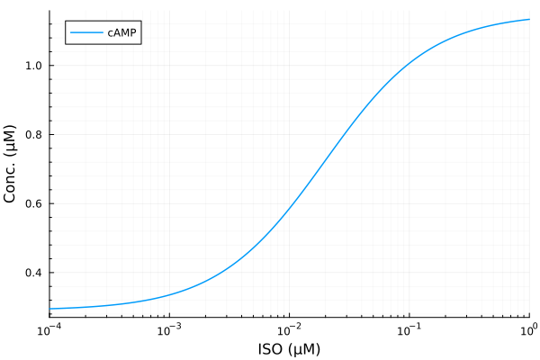
plot(iso, extract(sim, sys.PKACI / sys.RItot); lab="PKACI", ylabel="Activation fraction")
plot!(iso, extract(sim, sys.PKACII / sys.RIItot), lab="PKACII")
plot!(iso, extract(sim, sys.PP1 / sys.PP1totBA), lab="PP1", legend=:topleft; xopts...)
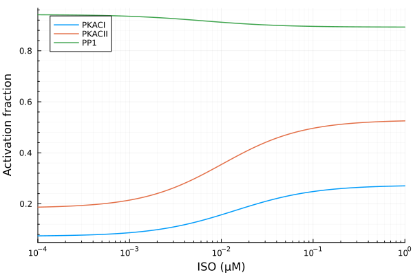
Fitting active PKACI#
@. model(x, p) = p[1] * x / (x + p[2]) + p[3]
xdata = iso
ydata = extract(sim, sys.PKACI / sys.RItot)
p0 = [0.3, 0.01μM, 0.08]
lb = [0.0, 0.0, 0.0]
pkac1_fit = curve_fit(model, xdata, ydata, p0; lower=lb, autodiff=:forwarddiff)
pkac1_coef = coef(pkac1_fit)
3-element Vector{Float64}:
0.19937293764079625
0.01390617687954668
0.07340271607767374
println("PKACI")
println("Basal activity: ", pkac1_coef[3])
println("Activated activity: ", pkac1_coef[1])
println("Michaelis constant: ", pkac1_coef[2], " μM")
println("RMSE: ", rmse(pkac1_fit))
PKACI
Basal activity: 0.07340271607767374
Activated activity: 0.19937293764079625
Michaelis constant: 0.01390617687954668 μM
RMSE: 0.000326933550132299
ypred = model.(xdata, Ref(pkac1_coef))
p1 = plot(xdata, [ydata ypred], lab=["Full model" "Fitted"], line=[:dash :dot], title="PKACI", legend=:topleft; xopts...)
p2 = plot(xdata, (ypred .- ydata) ./ ydata .* 100; title="PKACI error (%)", lab=false, xopts...)
plot(p1, p2, layout=(2, 1), size=(600, 600))
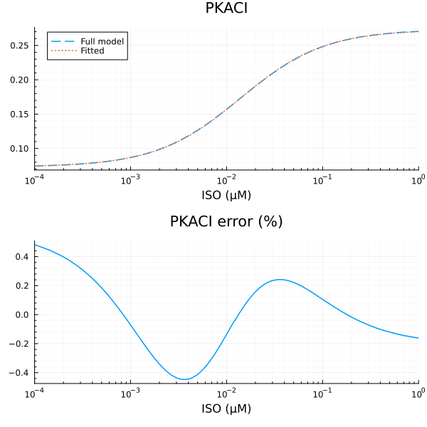
Fitting active PKACII#
xdata = iso
ydata = extract(sim, sys.PKACII / sys.RIItot)
p0 = [0.4, 0.01μM, 0.2]
lb = [0.0, 0.0, 0.0]
pkac2_fit = curve_fit(model, xdata, ydata, p0; lower=lb, autodiff=:forwarddiff)
pkac2_coef = coef(pkac2_fit)
3-element Vector{Float64}:
0.3443707798304218
0.010251025301118936
0.18399255075380827
println("PKACII")
println("Basal activity: ", pkac2_coef[3])
println("Activated activity: ", pkac2_coef[1])
println("Michaelis constant: ", pkac2_coef[2], " μM")
println("RMSE: ", rmse(pkac2_fit))
PKACII
Basal activity: 0.18399255075380827
Activated activity: 0.3443707798304218
Michaelis constant: 0.010251025301118936 μM
RMSE: 0.00024371222189781725
ypred = model.(xdata, Ref(pkac2_coef))
p1 = plot(xdata, [ydata ypred], lab=["Full model" "Fitted"], line=[:dash :dot], title="PKACII", legend=:topleft; xopts...)
p2 = plot(xdata, (ypred .- ydata) ./ ydata .* 100; title="PKACII error (%)", lab=false, xopts...)
plot(p1, p2, layout=(2, 1), size=(600, 600))
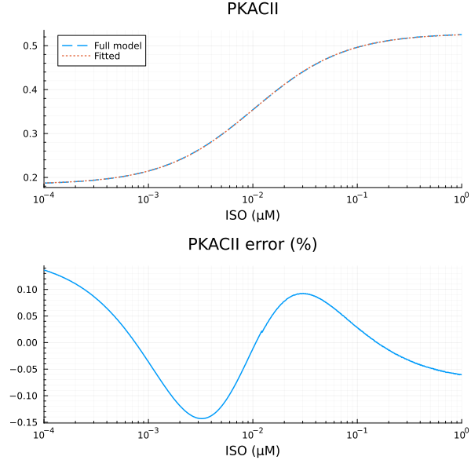
Least-square fitting of PP1 activity#
@. model_pp1(x, p) = p[1] * p[2] / (x + p[2]) + p[3]
xdata = iso
ydata = extract(sim, sys.PP1 / sys.PP1totBA)
p0 = [0.1, 3e-3μM, 0.8]
lb = [0.0, 0.0, 0.0]
pp1_fit = curve_fit(model_pp1, xdata, ydata, p0; lower=lb, autodiff=:forwarddiff)
pp1_coef = coef(pp1_fit)
3-element Vector{Float64}:
0.049191952461111785
0.006361898234866831
0.892713119276668
println("PP1")
println("Repressible activity: ", pp1_coef[1])
println("Minimal activity: ", pp1_coef[3])
println("Repressive Michaelis constant: ", pp1_coef[2], " μM")
println("RMSE: ", rmse(pp1_fit))
PP1
Repressible activity: 0.049191952461111785
Minimal activity: 0.892713119276668
Repressive Michaelis constant: 0.006361898234866831 μM
RMSE: 3.5405233556999936e-5
ypred = model_pp1.(xdata, Ref(pp1_coef))
p1 = plot(xdata, [ydata ypred], lab=["Full model" "Fitted"], line=[:dash :dot], title="PP1", legend=:topright; xopts...)
p2 = plot(xdata, (ypred .- ydata) ./ ydata .* 100; title="PP1 error (%)", lab=false, xopts...)
plot(p1, p2, layout=(2, 1), size=(600, 600))
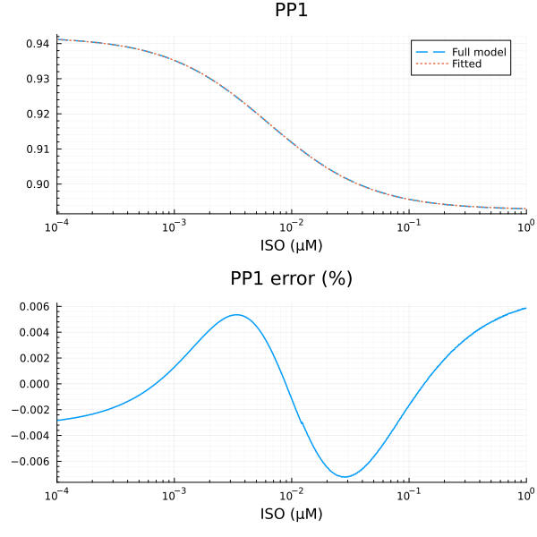
Fitting PLBp#
xdata = iso
ydata = extract(sim, sys.PLBp / sys.PLBtotBA)
plot(xdata, ydata, title="PLBp fraction", lab=false; xopts...)
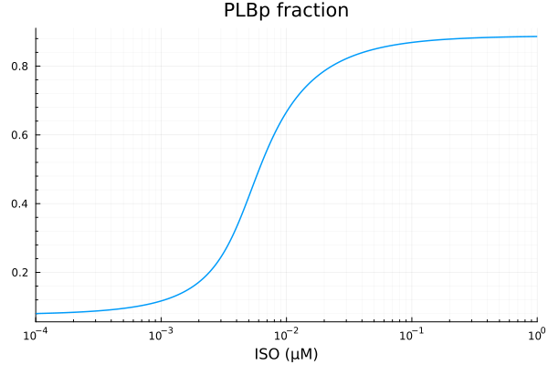
First try: Hill function
@. model_plb(x, p) = p[1] * hil(x, p[2], p[3]) + p[4]
p0 = [0.8, 1e-2μM, 1.0, 0.1]
lb = [0.5, 1e-9μM, 1.0, 0.0]
fit = curve_fit(model_plb, xdata, ydata, p0; lower=lb, autodiff=:forwarddiff)
pestim = coef(fit)
4-element Vector{Float64}:
0.7923203662040967
0.005936643968064003
1.838668097371868
0.08301221919922296
println("PLBp")
println("Basal activity: ", pestim[4])
println("Activated activity: ", pestim[1])
println("Michaelis constant: ", pestim[2], " μM")
println("Hill coefficient: ", pestim[3])
println("RMSE: ", rmse(fit))
PLBp
Basal activity: 0.08301221919922296
Activated activity: 0.7923203662040967
Michaelis constant: 0.005936643968064003 μM
Hill coefficient: 1.838668097371868
RMSE: 0.008419222006247033
ypred = model_plb.(xdata, Ref(pestim))
p1 = plot(xdata, [ydata ypred], lab=["Full model" "Fitted"], line=[:dash :dot], title="PLBp", legend=:topleft; xopts...)
p2 = plot(xdata, (ypred .- ydata) ./ ydata .* 100; title="PLBp error (%)", lab=false, xopts...)
plot(p1, p2, layout=(2, 1), size=(600, 600))
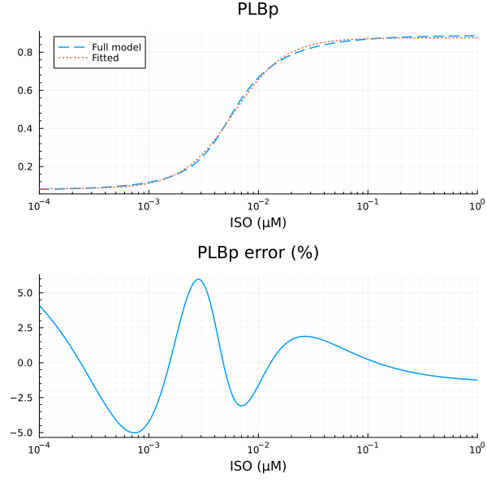
Fitting PLMp#
xdata = iso
ydata = extract(sim, sys.PLMp / sys.PLMtotBA)
plot(xdata, ydata, title="PLMp fraction", lab=false; xopts...)
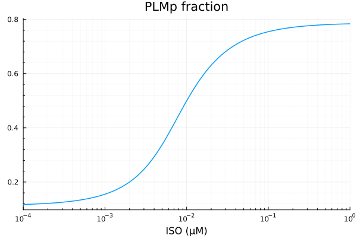
@. model_plm(x, p) = p[1] * hil(x, p[2], p[3]) + p[4]
p0 = [0.8, 1e-2μM, 1.0, 0.1]
lb = [0.5, 1e-9μM, 1.0, 0.0]
fit = curve_fit(model_plm, xdata, ydata, p0; lower=lb, autodiff=:forwarddiff)
pestim = coef(fit)
4-element Vector{Float64}:
0.661718959957796
0.008181712259423272
1.3710344582362946
0.1177272479802758
println("PLMp")
println("Basal activity: ", pestim[4])
println("Activated activity: ", pestim[1])
println("Michaelis constant: ", pestim[2], " μM")
println("Hill coefficient: ", pestim[3])
println("RMSE: ", rmse(fit))
PLMp
Basal activity: 0.1177272479802758
Activated activity: 0.661718959957796
Michaelis constant: 0.008181712259423272 μM
Hill coefficient: 1.3710344582362946
RMSE: 0.0032738668487186902
ypred = model_plm.(xdata, Ref(pestim))
p1 = plot(xdata, [ydata ypred], lab=["Full model" "Fitted"], line=[:dash :dot], title="PLMp", legend=:topleft; xopts...)
p2 = plot(xdata, (ypred .- ydata) ./ ydata .* 100; title="PLMp error (%)", lab=false, xopts...)
plot(p1, p2, layout=(2, 1), size=(600, 600))
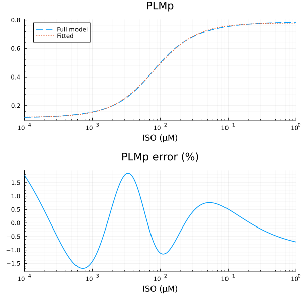
Fitting TnIp#
xdata = iso
ydata = extract(sim, sys.TnIp / sys.TnItotBA)
plot(xdata, ydata, title="TnIp fraction", lab=false; xopts...)
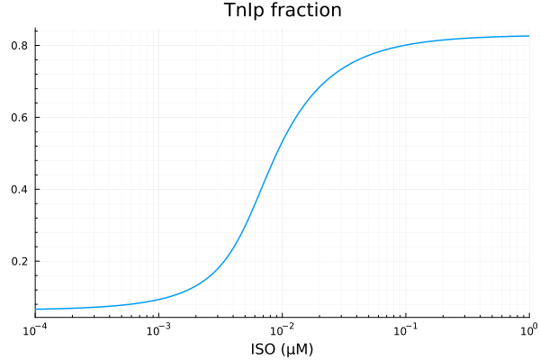
@. model_tni(x, p) = p[1] * hil(x, p[2], p[3]) + p[4]
p0 = [0.8, 1e-2μM, 1.0, 0.1]
lb = [0.1, 1e-9μM, 1.0, 0.0]
fit = curve_fit(model_tni, xdata, ydata, p0; lower=lb, autodiff=:forwarddiff)
pestim = coef(fit)
4-element Vector{Float64}:
0.7481955048227596
0.007856339604983276
1.6973362451230387
0.06752960258346302
println("TnIp")
println("Basal activity: ", pestim[4])
println("Activated activity: ", pestim[1])
println("Michaelis constant: ", pestim[2], " μM")
println("Hill coefficient: ", pestim[3])
println("RMSE: ", rmse(fit))
TnIp
Basal activity: 0.06752960258346302
Activated activity: 0.7481955048227596
Michaelis constant: 0.007856339604983276 μM
Hill coefficient: 1.6973362451230387
RMSE: 0.007437139678750001
ypred = model_tni.(xdata, Ref(pestim))
p1 = plot(xdata, [ydata ypred], lab=["Full model" "Fitted"], line=[:dash :dot], title="TnIp", legend=:topleft; xopts...)
p2 = plot(xdata, (ypred .- ydata) ./ ydata .* 100; title="TnIp error (%)", lab=false, xopts...)
plot(p1, p2, layout=(2, 1), size=(600, 600))
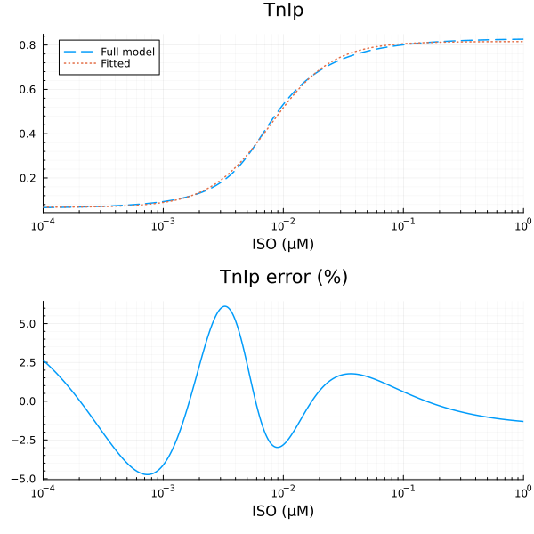
Fitting LCCap#
xdata = iso
ydata = extract(sim, sys.LCCap / sys.LCCtotBA)
plot(xdata, ydata, title="LCCap fraction", lab=false; xopts...)
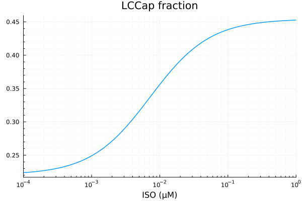
@. model_lcc(x, p) = p[1] * hil(x, p[2]) + p[3]
p0 = [0.8, 1e-2μM, 0.1]
lb = [0.1, 1e-9μM, 0.0]
fit = curve_fit(model_lcc, xdata, ydata, p0; lower=lb, autodiff=:forwarddiff)
pestim = coef(fit)
3-element Vector{Float64}:
0.23338203470462332
0.007263353843108377
0.2208194668956709
println("LCCap")
println("Basal activity: ", pestim[3])
println("Activated activity: ", pestim[1])
println("Michaelis constant: ", pestim[2], " μM")
println("RMSE: ", rmse(fit))
LCCap
Basal activity: 0.2208194668956709
Activated activity: 0.23338203470462332
Michaelis constant: 0.007263353843108377 μM
RMSE: 0.00013472586289951688
ypred = model_lcc.(xdata, Ref(pestim))
p1 = plot(xdata, [ydata ypred], lab=["Full model" "Fitted"], line=[:dash :dot], title="LCCap", legend=:topleft; xopts...)
p2 = plot(xdata, (ypred .- ydata) ./ ydata .* 100; title="LCCap error (%)", lab=false, xopts...)
plot(p1, p2, layout=(2, 1), size=(600, 600))
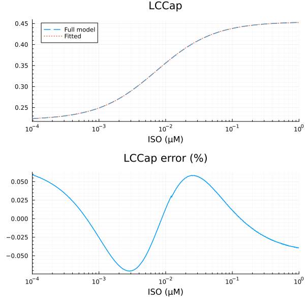
Fitting LCCbp#
xdata = iso
ydata = extract(sim, sys.LCCbp / sys.LCCtotBA)
plot(xdata, ydata, title="LCCbp fraction", lab=false; xopts...)
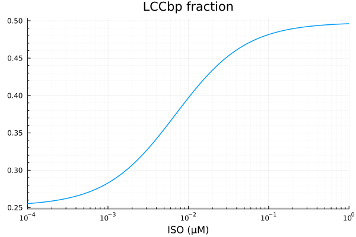
p0 = [0.8, 1e-2μM, 0.1]
lb = [0.1, 1e-9μM, 0.0]
fit = curve_fit(model_lcc, xdata, ydata, p0; lower=lb, autodiff=:forwarddiff)
pestim = coef(fit)
3-element Vector{Float64}:
0.2455890307864609
0.006961128884553168
0.2520079943281469
println("LCCbp")
println("Basal activity: ", pestim[3])
println("Activated activity: ", pestim[1])
println("Michaelis constant: ", pestim[2], " μM")
println("RMSE: ", rmse(fit))
LCCbp
Basal activity: 0.2520079943281469
Activated activity: 0.2455890307864609
Michaelis constant: 0.006961128884553168 μM
RMSE: 0.00013805944672658452
ypred = model_lcc.(xdata, Ref(pestim))
p1 = plot(xdata, [ydata ypred], lab=["Full model" "Fitted"], line=[:dash :dot], title="LCCbp", legend=:topleft; xopts...)
p2 = plot(xdata, (ypred .- ydata) ./ ydata .* 100; title="LCCbp error (%)", lab=false, xopts...)
plot(p1, p2, layout=(2, 1), size=(600, 600))
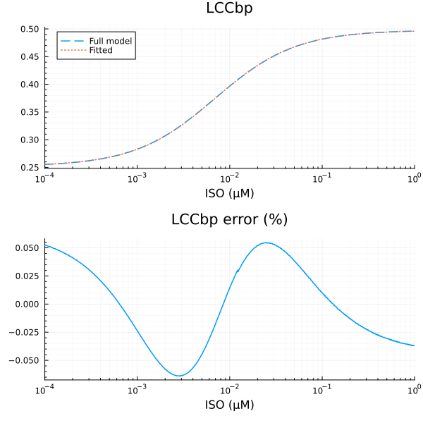
Fitting KURp#
xdata = iso
ydata = extract(sim, sys.KURp / sys.IKurtotBA)
plot(xdata, ydata, title="LCCbp fraction", lab=false; xopts...)
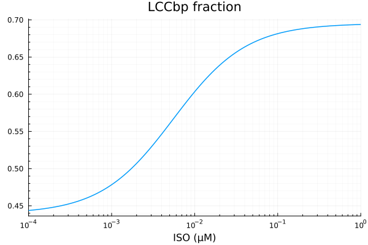
@. model_kur(x, p) = p[1] * hil(x, p[2]) + p[3]
p0 = [0.8, 1e-2μM, 0.1]
lb = [0.1, 1e-9μM, 0.0]
fit = curve_fit(model_kur, xdata, ydata, p0; lower=lb, autodiff=:forwarddiff)
pestim = coef(fit)
3-element Vector{Float64}:
0.25565724721886424
0.005578158691641229
0.43936401862491953
println("KURp")
println("Basal activity: ", pestim[3])
println("Activated activity: ", pestim[1])
println("Michaelis constant: ", pestim[2], " μM")
println("RMSE: ", rmse(fit))
KURp
Basal activity: 0.43936401862491953
Activated activity: 0.25565724721886424
Michaelis constant: 0.005578158691641229 μM
RMSE: 0.0001484852469948616
ypred = model_lcc.(xdata, Ref(pestim))
p1 = plot(xdata, [ydata ypred], lab=["Full model" "Fitted"], line=[:dash :dot], title="KURp", legend=:topleft; xopts...)
p2 = plot(xdata, (ypred .- ydata) ./ ydata .* 100; title="KURp error (%)", lab=false, xopts...)
plot(p1, p2, layout=(2, 1), size=(600, 600))
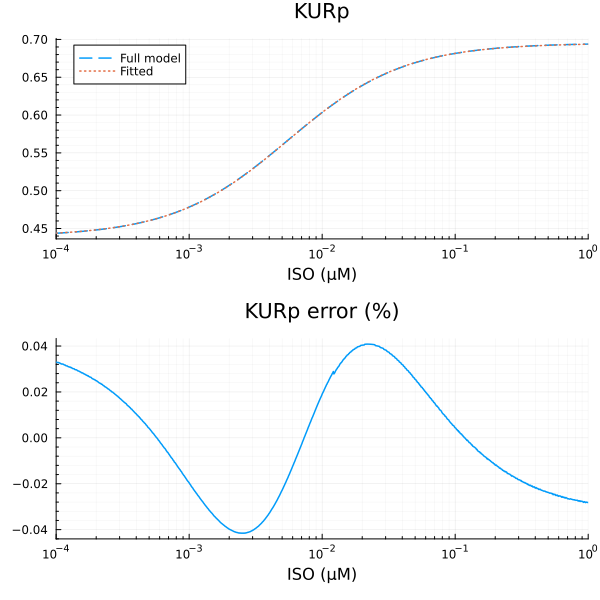
Fitting RyRp#
xdata = iso
ydata = extract(sim, sys.RyR_PKAp)
plot(xdata, ydata, title="RyRp fraction", lab=false; xopts...)
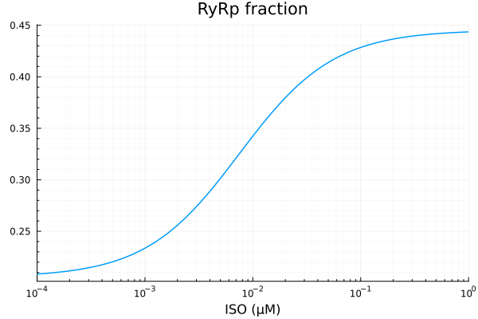
@. model(x, p) = p[1] * x / (x + p[2]) + p[3]
p0 = [0.3, 1e-2μM, 0.1]
lb = [0.0, 1e-9μM, 0.0]
fit = curve_fit(model, xdata, ydata, p0; lower=lb, autodiff=:forwarddiff)
pestim = coef(fit)
3-element Vector{Float64}:
0.23988671301945835
0.0075098746671775985
0.20539804560868438
println("RyRp")
println("Basal activity: ", pestim[3])
println("Activated activity: ", pestim[1])
println("Michaelis constant: ", pestim[2], " μM")
println("RMSE: ", rmse(fit))
RyRp
Basal activity: 0.20539804560868438
Activated activity: 0.23988671301945835
Michaelis constant: 0.0075098746671775985 μM
RMSE: 7.686883892119039e-5
ypred = model.(xdata, Ref(pestim))
p1 = plot(xdata, [ydata ypred], lab=["Full model" "Fitted"], line=[:dash :dot], title="RyRp", legend=:topleft; xopts...)
p2 = plot(xdata, (ypred .- ydata) ./ ydata .* 100; title="RyRp error (%)", lab=false, xopts...)
plot(p1, p2, layout=(2, 1), size=(600, 600))
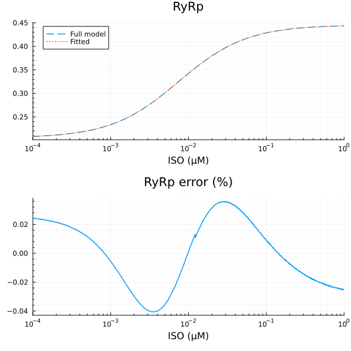
This notebook was generated using Literate.jl.